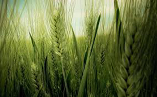
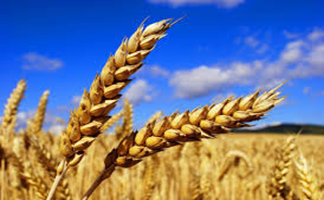
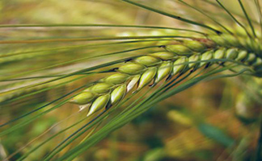

Зерновые культуры в Росссии
| Зерновая культура Рожь | Зерновая культура Пшеница | Зерновая культура Ячмень |
|---|---|---|
|  |  |  |
Зерновая культура | Зерновая культура | Зерновая культура |
| Рожь-однлетнее или двулетнее травянистое растение. Рожь посеная как природный вид яляется диплоидной формой | Рожь-однлетнее или двулетнее травянистое растение. Рожь посеная как природный вид яляется диплоидной формой | Рожь-однлетнее или двулетнее травянистое растение. Рожь посеная как природный вид яляется диплоидной формой |
Выращивание зерновых культур
 | |
|---|---|
| Выращивание зерновых культур является одной из базовых составляющих России. потенциал для выращивания различных зерновых культур очень велик. | Выращивание зерновых культур является одной из базовых составляющих России. потенциал для выращивания различных зерновых культур очень велик. |
 | |
| Выращивание зерновых культур является одной из базовых составляющих России. потенциал для выращивания различных зерновых культур очень велик. | Выращивание зерновых культур является одной из базовых составляющих России. потенциал для выращивания различных зерновых культур очень велик. |